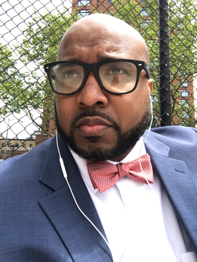

From an early age I have been a rabble rouser and politically active. I have taken an active role informing community members on advocacy strategies and helping people develop community restoration activities. I am the owner and operator of Techmovr LLC; the company provides education services in the areas of health services, health policy / advocacy, STEM education, and technology.
As a creative at my core I have a design aspect of my company that designs infographics and develops innovative data driven art installments. I also a member of the comedy duo “Special Education” which pokes fun at the US education system, tells fun stories of the lives of former educators, and tries to point to a positive path forward. To my knowledge I am a wonderful husband who has an amazing wife and a cute dog. We have been together for 5 years and our relationship revolves around our passion, laughter, kindness, and communication. We are still deciding where our next move will be but we are excited.
Hey I am Desmond Seymour and I am an entrepreneur, educator, advocate, creative, and husband who is dedicated to the idea of maximizing my human potential. All of the work that I do is centered around helping individuals (myself included) expand, find joy, build connection, and learn as much as possible along the way. I am the owner and operator of Techmovr LLC; the company provides education services in the areas of health services, health policy / advocacy, STEM education, and technology. I have run the company Doula for Dad and its related services since 2016. I have partnered via education series with the New York City Department of Health, The Healthy Action Committee, and American Heart Society. In addition I have worked with father focused organizations such as CRIB, SCO, and the Resiliency Advocacy Project. In addition Techmovr has a STEM focused computer program that is utilized by schools to engage young people in business skills development.
